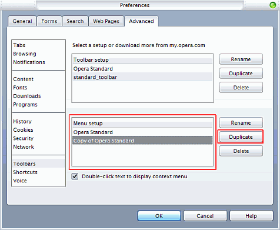
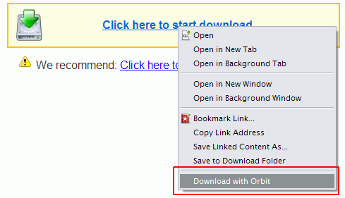
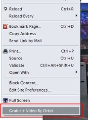
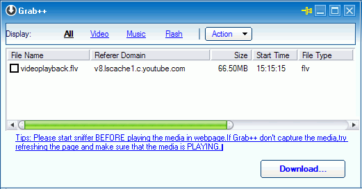

Editar menú contextual de Opera
Teniendo problemas con la conexión, me decidí a volver a usar gestores de descargas, pero tales (o mejor, Orbit Downloader) no se integraban con Opera.
En Opera vayan a Herramientas > Preferencias (o alt+p), pestaña Avanzado y a la barra de la izquierda vayan a Barras.
Opcional: duplicar el Opera Standard en Configurar menú.

Una vez duplicado, cierren Opera. Vayan a su profile + menu, usualmente es en: C:\Documents and Settings\[usuario]\Datos de programa\Opera\[versión de Opera]\menu. Si no saben, vayan a opera:about (yendo por el menu Ayuda > Acerca de Opera) y fijense en la sección de
Rutas.
En esa carpeta se encuentra un archivo .ini. En mi caso, como no le
cambié el nombre es: standard\_menu (1).ini. Ábranlo en un
editor de texto y busquen [Link Popup Menu] . Ahi estan todas las
opciones de cuando se hace click sobre un link.
Al final de esa sección agreguen un separador (solo para quede lindo), copien y pegen esa linea que es algo asi --------------------[número], y cambien el número ese por uno más.
Despúes de esa linea, peguen esta y modifiquen:
Item, "Download with Orbit" = Execute program, "C:\Archivos de programa\Orbitdownloader\orbitdm.exe","%l"
Donde "Download with Orbit" es lo que se va a mostrar al hacer click derecho/menú contextual.
La ruta es hacia donde está el programa propiamente dicho. El parámetro
%l es el lnk.
Guarden el archivo, (re)inicien Opera. Vayan a un link de descarga (cualquier tipo de archivo) y et voilà! aparece en el menú!

Hay otra opción que es para descargar contenido multimedia al estilo
Youtube. Obviamente, se puede hacer abriendo grab++ (viene incluído
en el paquete), pero como a veces no hay ganas de abrirlo, también se
puede hacer por menu.
En el .ini busquen [Document Popup Menu] . Esto es cuando haces
click en un lugar "limpio" (sin imágenes, links, etc). Agreguen y modifiquen al final:
Item, "Grab++ Video By Orbit"="Execute program,"C:\Archivos de Programa\Orbitdownloader\Grab.exe","%u""
Guarden y reinicien Opera. En un lugar X de la página (en este ejemplo, un video de Youtube, al lado del video), y sale el menú:

Esto abre el Grab++ (un addon sería) y trae el video (previa
recarga de la página).

Comments
How to comment
- Tweet with an URL to this post (
http://blog.aquinzi.com/opera-editar-menu-contextual/) - Write a post linking here and send me a Webmention.
- With disqus
Ves eso??? se me cae una idola :P